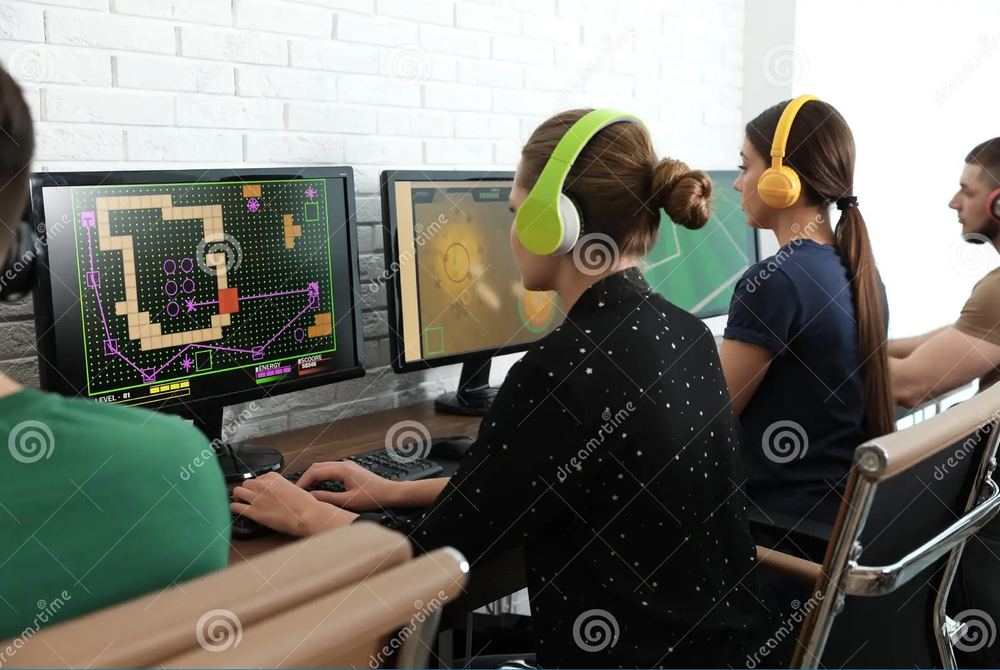

Exploring the World of Games Lounge: Where Gaming Dreams Come True
In the heart of Lagos, Nigeria, amidst the bustling streets and vibrant culture, there exists a sanctuary for gamers of all kinds – the Games Lounge. This haven, tucked away from the daily grind, is a place where gaming enthusiasts can come together to experience the thrill of gaming in a whole new light. In this blog, we'll take you on a journey to explore the world of Games Lounge, where gaming dreams come true.
A Diverse Gaming Haven: Games Lounge prides itself on offering a diverse range of gaming experiences, catering to the varied tastes and preferences of its patrons. Whether you're an adrenaline junkie who thrives on action-packed adventures or a puzzle-solving prodigy looking for mind-bending challenges, Games Lounge has something for everyone.
- Competitive Tournaments: For those who crave competition and thrive on the rush of victory, Games Lounge hosts thrilling esports tournaments. These tournaments bring together the best and brightest gamers in Lagos, giving you the chance to test your skills and claim glory. Compete against fellow gamers for fantastic prizes and the coveted title of esports champion. Whether you're a casual player looking for fun or a competitive pro aiming for the top, Games Lounge's tournaments have something to offer you.
- Comfortable Environment: At Games Lounge, it's not just about screens and controllers; it's about creating an overall gaming experience. The center provides comfortable lounge areas where you can relax between gaming sessions. Enjoy a variety of snacks and refreshments as you immerse yourself in the gaming world.
- Events and Celebrations: Games Lounge is more than just a gaming center; it's also the perfect venue for gaming-themed gatherings and special occasions.
Please note that this website is a developing website so, these features are yet to be added.
Conclusion: In Lagos, Nigeria, Games Lounge stands as a testament to the growing gaming culture and community. It's a place where gamers can unite, compete, relax, and celebrate their shared passion for gaming. With a diverse range of games, cutting-edge facilities, and a commitment to creating memorable gaming experiences, Games Lounge truly is where gaming dreams come true. So, whether you're a student at KIBO or anyone else with a love for gaming, Games Lounge awaits your visit to embark on a gaming adventure like no other.